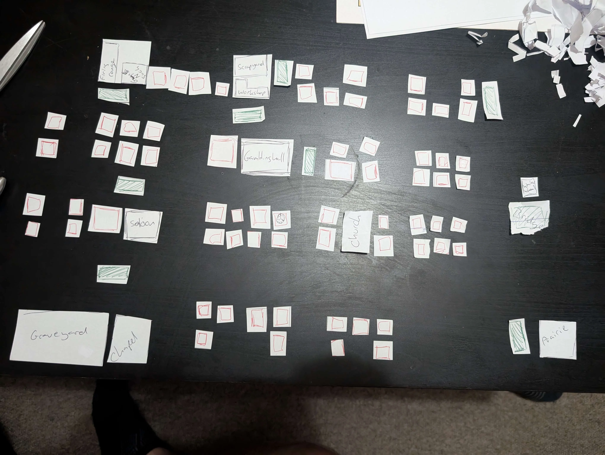
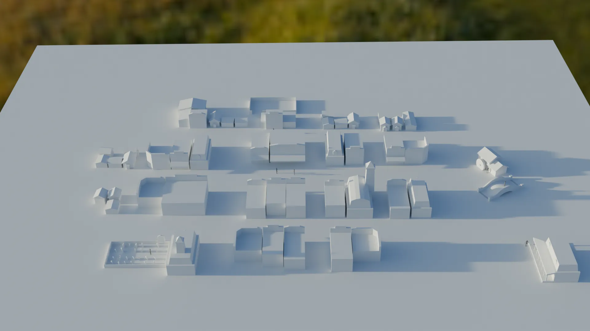
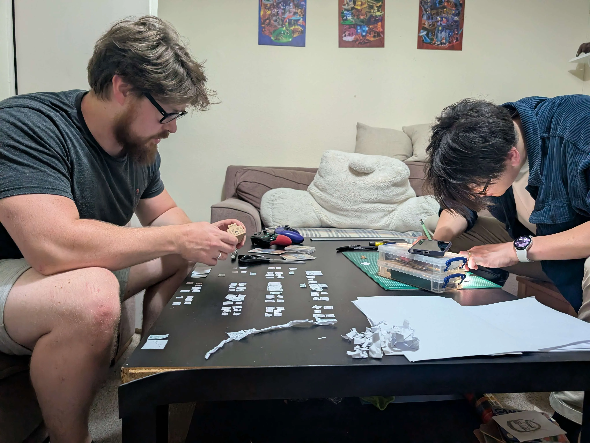

Menu Flow, Game Setup & World Integration in Rooty Tooty
Last time, I wrote about pathfinding and grid-based movement - this time I've developed and will talk about the overall menu flow, game setup system, and how Rooty Tooty elegantly transitions from its dynamic main menu into live gameplay. There's a surprising amount going on under the hood to make it feel smooth, modular, and future-ready.
GameSetupData: The Backbone
At the centre of everything is a static class called GameSetupData. This isn't a
ScriptableObject, and it doesn't live in a scene. Instead, it holds persistent session
data like player count, team
mode, controller assignments, selected characters, CPU flags, and arena selection. It's accessible
from
any script without needing instantiation, making it ideal for storing game state between scenes.
// Inside GameSetupData.cs
public static int NumPlayers;
public static int[] CharacterSelections;
public static ArenaInfo SelectedArenaInfo;
When players choose characters and arenas, the data goes into GameSetupData, and the
gameplay scene pulls directly from it.
Two key systems use Unity ScriptableObject assets: CharacterInfo and
ArenaInfo. These act as templates - one for playable characters and the other for
playable arenas. Each prefab
is assigned a ScriptableObject, and those objects store descriptive metadata, UI portraits, movement
stats, and
more. It keeps configuration data out of prefabs and makes balancing easier across the board.
Rooty Tooty begins in the MainMenu scene, with the camera set looking over the town.
From here, players choose between Local, Settings (currently a
placeholder), or Quit. Selecting "Local" initiates the full multiplayer setup flow.
Each panel - from team mode to character select - is part of a smooth, stylised UI experience. As players move through the menu, the camera doesn't just cut between screens. It lerps - easing from one hand-crafted camera transform to another - revealing different corners of the blockout town.
The world scene itself loads additively in the background via Unity's scene streaming. Andy created a quick and temporary blockout in Blender in under 5 minutes (it was impressively fast) that let me visualise panel positions and test transitions. Later, after a proper design session with Andy, Josh and myself, we refined the town layout using physical paper cut-outs to map out where key buildings and arena tiles would sit around the town. That blockout became the foundation of what is seen in the background of the menu.
  Panel Progression
Menu navigation is handled by MenuManager.cs, which controls the current panel, camera
target,
and manages transitions with a bit of polish. The order is as follows:
- MainMenu Panel - entry point with "Local" as the launch option.
- LocalCoopSetup Panel - here players choose 1v1 or 2v2. This sets
NumPlayersandTeamModeinGameSetupData. - CharacterSelectPanel - shows 2 or 4 character slots depending on team mode.
Character choices are saved to
GameSetupData.CharacterSelections. - ArenaSelectPanel - lets you pick from available arenas. When one is selected,
its
ArenaInfois saved intoGameSetupData.SelectedArenaInfo. - GameSetupPanel - final review screen showing all selections: characters, arena, and mode. The "Play" button starts the match.
This script captures the 1v1 or 2v2 selection, sets the team mode, and pushes the flow forward. It's simple but critical - everything else hinges on the correct number of player slots and controller inputs being prepared.
GameSetupData.NumPlayers = 2;
GameSetupData.TeamMode = 2;
menuManager.ShowCharacterSelectPanel();
Character select adapts dynamically: if you're in 1v1, two player slots are shown; if 2v2, all four
appear. Players navigate a grid of characters (pulled from CharacterInfo assets) and
select one each. Once
filled, it triggers a "Next" button to move on.
In this panel, players choose through unlockable and unlocked arenas. Locked ones show a brief
description on how to unlock them.
Each arena when selected preview their location in the town via the world camera and a highlight
prefab. The
chosen arena is
stored in
GameSetupData.SelectedArenaInfo.
The final panel gives players a chance to confirm everything: team mode, characters, and arena. This is the last stop before gameplay starts - and pressing the "Play" button kicks off the scene load.
World Streaming & Play Button
Pressing play triggers the GameLoader script. Behind the scenes, Unity unloads the
MainMenu scene and loads the Gameplay scene additively, while keeping the
persistent
World scene in memory. This keeps transitions fast, reduces loading stutter, and allows
for seamless visuals between menu and in-game environment.
// In GameLoader.cs
SceneManager.UnloadSceneAsync("MainMenu");
SceneManager.LoadSceneAsync("Gameplay", LoadSceneMode.Additive);
On the gameplay side, I updated key scripts to read from GameSetupData:
TurnManagernow spawns the correct number of players based onNumPlayers, assigns characters fromCharacterSelections, and positions the arena usingSelectedArenaInfo.glowPoint.GridInputControllerdisables input except for the active player in the turn sequence.PlayerCharacterinitialises with the right scriptable-character data and spawns exactly in the preset grid cell.
All of this ties gameplay setup directly back to your menu selections, making the flow feel seamless and cohesive.
The entire system now feels tightly integrated - a user journey that starts with an overlook of the town and ends in a shootout without breaking immersion. And all of it driven by centralised data, well-structured panels, and a background world that feels alive.
In the next post, I'll hopefully have a turn phase system - movement, shooting, and card play - as well as how each character executes actions during their round. But for now, I'm thrilled with how the game is stitching together, and hopefully next time each character will appear differently rather than appearing as capsule placeholders.
Thanks again for following along, and be sure to keep up with the blogs.
Andy and Josh hard at work
Chad and Andy hard at work